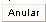
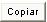
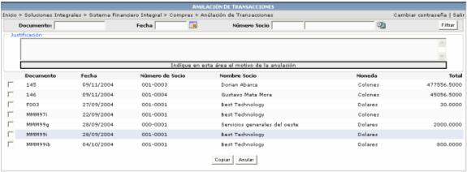
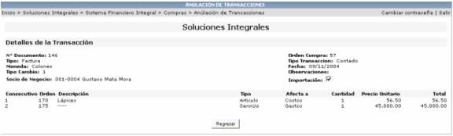

Para anular una transacción se debe de seleccionar el registro deseado, escribir una justificación del por qué se esta anulando dicha transacción y luego presionar el botón

.
El botón

pasa los registros seleccionados a la opción Registro de Transacciones para que el usuario edite la información y la pueda volver a aplicar. Luego los anula.

Para ver el detalle de una transacción se hace click sobre el registro deseado:
